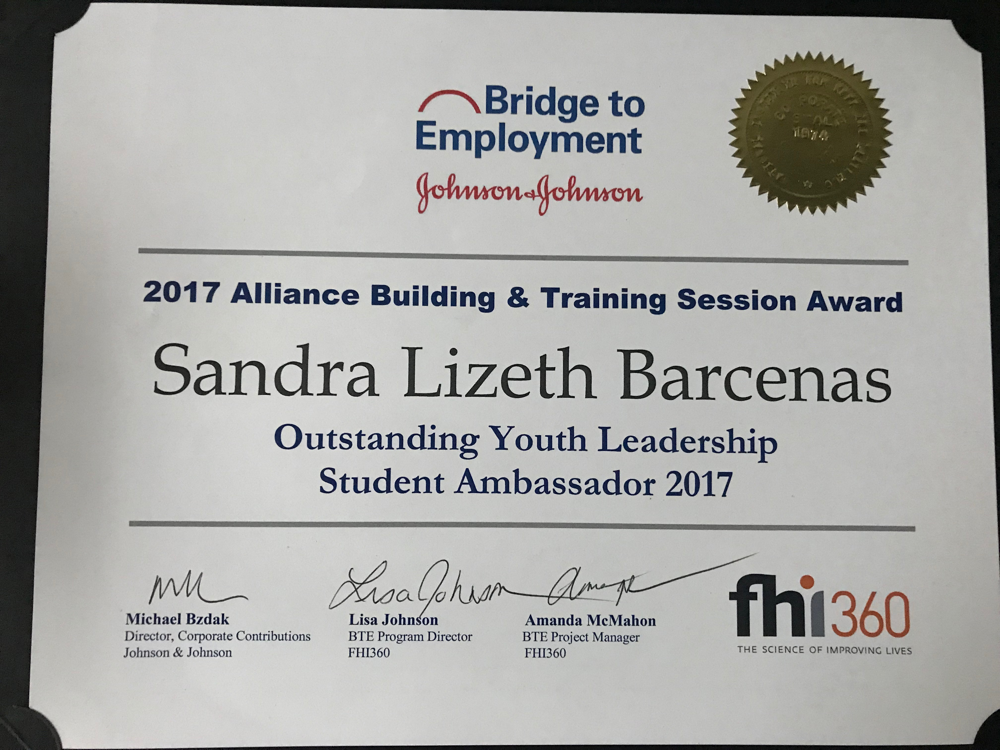
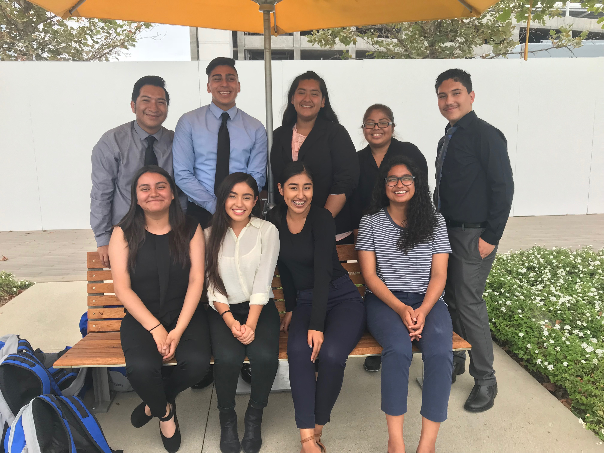

CTE Criminal Justice - Junior
BTE ABTS Student Ambassador - Junior
Girl Stater 2018 - Rising Senior

AISS Edwards Lifescience Externship - Rising Senior
I am taking this course because computer science has sparked an interest in me. In the program Achievement Institute of Scientific Studdies (AISS), I experieced some coding techniques and broadened my knowledge on computer science engineering. I took an interest in it and now I am considering to minor in computer science.